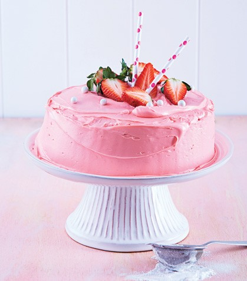

Pastel de malteada de fresa

Ingredientes
- 8 cucharadas de mantequilla a temperatura ambiente.
- 2 2/3 tazas de harina.
- 1 cucharada de polvo para hornear.
- 1 cucharadita de sal.
- 2 tazas de azucar.
- 1/2 taza de aceite vegetal.
- 5 huevos.
- 1 taza de frambuesas.
- 2 cucharadas de fecula de maiz.
- 1 cucharada de extracto de vainilla.
- 1 taza de leche.
- 4 cucharadas dejarabe de fresa.
- 2 tazas de betun de vainilla.
- 1 taza de fresa frescas troceadas.
Preparacion
- precalienta el horno a 180C. engrasa y enharina un molde para pastel redondo.
- En un tazon mezcla la harina, el polvo para hornear y la sal.
- Crema la mantequilla con el azucar y el aceite durante cinco minutos. Agrega los huevos uno por uno hasta integrar; incorpora la vaianilla.
- Agrega alternadamente la harina y la leche. Revuelca las frambuesas en fecula de maiz y envuelvelas en la mezcla y viertela al molde.
- Hornea durante 40 minutos a hasta que al insertar palillo salga limpio. En fria y voltea para retirar del molde. Mezcla el betun con el jarabe, cubre el pastel y decora con las fresas.